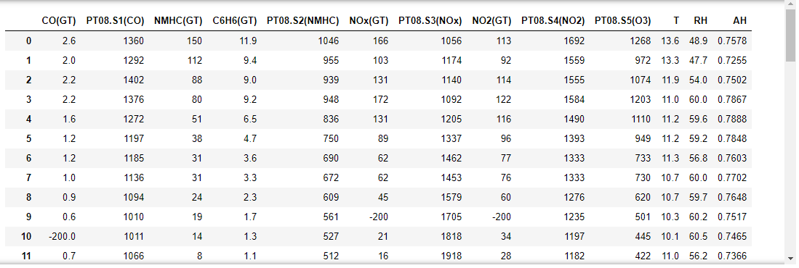
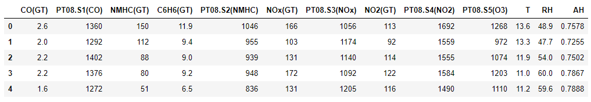
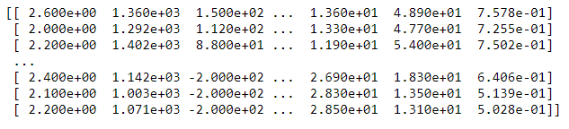
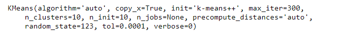
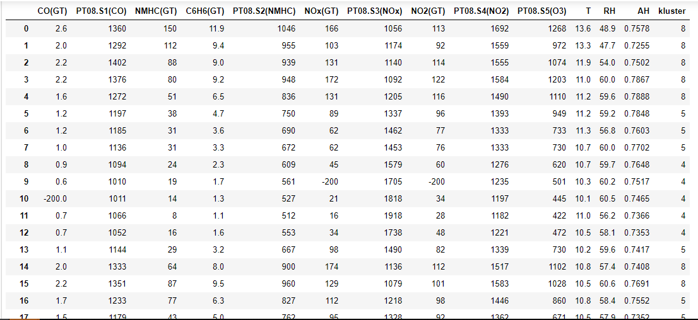
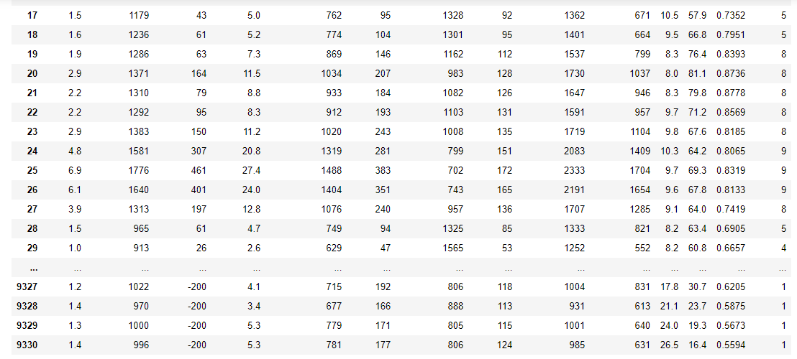
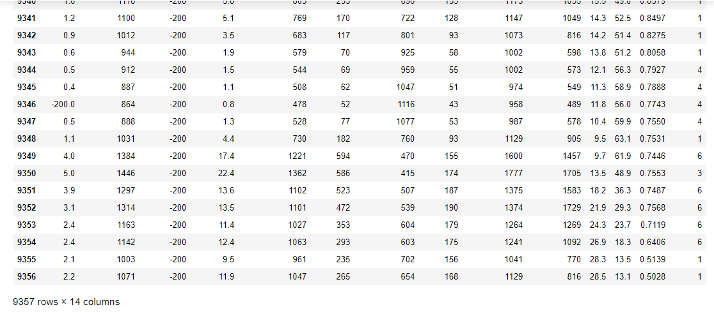

<!doctype html>
<html lang="en" class="no-js">
  <head>
    
      <meta charset="utf-8">
      <meta name="viewport" content="width=device-width,initial-scale=1">
      <meta http-equiv="x-ua-compatible" content="ie=edge">
      
        <meta name="description" content="ALGORITMA CLUSTERING">
      
      
        <link rel="canonical" href="https://awlya12.github.io/170441100017_aulyafridayanti_kmean/getting-started/">
      
      
        <meta name="author" content="Aulya Fridayanti">
      
      
        <meta name="lang:clipboard.copy" content="Copy to clipboard">
      
        <meta name="lang:clipboard.copied" content="Copied to clipboard">
      
        <meta name="lang:search.language" content="en">
      
        <meta name="lang:search.pipeline.stopwords" content="True">
      
        <meta name="lang:search.pipeline.trimmer" content="True">
      
        <meta name="lang:search.result.none" content="No matching documents">
      
        <meta name="lang:search.result.one" content="1 matching document">
      
        <meta name="lang:search.result.other" content="# matching documents">
      
        <meta name="lang:search.tokenizer" content="[\s\-]+">
      
      <link rel="shortcut icon" href="../assets/images/favicon.png">
      <meta name="generator" content="mkdocs-1.0.4, mkdocs-material-4.2.0">
    
    
      
        <title>K-meansclustering - Aulya's Project</title>
      
    
    
      <link rel="stylesheet" href="../assets/stylesheets/application.750b69bd.css">
      
        <link rel="stylesheet" href="../assets/stylesheets/application-palette.224b79ff.css">
      
      
        
        
        <meta name="theme-color" content="#3f51b5">
      
    
    
      <script src="../assets/javascripts/modernizr.74668098.js"></script>
    
    
      
        <link href="https://fonts.gstatic.com" rel="preconnect" crossorigin>
        <link rel="stylesheet" href="https://fonts.googleapis.com/css?family=Roboto:300,400,400i,700|Roboto+Mono">
        <style>body,input{font-family:"Roboto","Helvetica Neue",Helvetica,Arial,sans-serif}code,kbd,pre{font-family:"Roboto Mono","Courier New",Courier,monospace}</style>
      
    
    <link rel="stylesheet" href="../assets/fonts/material-icons.css">
    
    
    
      
        
<script>
  window.ga = window.ga || function() {
    (ga.q = ga.q || []).push(arguments)
  }
  ga.l = +new Date
  /* Setup integration and send page view */
  ga("create", "None", "auto")
  ga("set", "anonymizeIp", true)
  ga("send", "pageview")
  /* Register handler to log search on blur */
  document.addEventListener("DOMContentLoaded", () => {
    if (document.forms.search) {
      var query = document.forms.search.query
      query.addEventListener("blur", function() {
        if (this.value) {
          var path = document.location.pathname;
          ga("send", "pageview", path + "?q=" + this.value)
        }
      })
    }
  })
</script>
<script async src="https://www.google-analytics.com/analytics.js"></script>
      
    
    
  </head>
  
    
    
    <body dir="ltr" data-md-color-primary="indigo" data-md-color-accent="indigo">
  
    <svg class="md-svg">
      <defs>
        
        
          <svg xmlns="http://www.w3.org/2000/svg" width="416" height="448"
    viewBox="0 0 416 448" id="__github">
  <path fill="currentColor" d="M160 304q0 10-3.125 20.5t-10.75 19-18.125
        8.5-18.125-8.5-10.75-19-3.125-20.5 3.125-20.5 10.75-19 18.125-8.5
        18.125 8.5 10.75 19 3.125 20.5zM320 304q0 10-3.125 20.5t-10.75
        19-18.125 8.5-18.125-8.5-10.75-19-3.125-20.5 3.125-20.5 10.75-19
        18.125-8.5 18.125 8.5 10.75 19 3.125 20.5zM360
        304q0-30-17.25-51t-46.75-21q-10.25 0-48.75 5.25-17.75 2.75-39.25
        2.75t-39.25-2.75q-38-5.25-48.75-5.25-29.5 0-46.75 21t-17.25 51q0 22 8
        38.375t20.25 25.75 30.5 15 35 7.375 37.25 1.75h42q20.5 0
        37.25-1.75t35-7.375 30.5-15 20.25-25.75 8-38.375zM416 260q0 51.75-15.25
        82.75-9.5 19.25-26.375 33.25t-35.25 21.5-42.5 11.875-42.875 5.5-41.75
        1.125q-19.5 0-35.5-0.75t-36.875-3.125-38.125-7.5-34.25-12.875-30.25-20.25-21.5-28.75q-15.5-30.75-15.5-82.75
        0-59.25 34-99-6.75-20.5-6.75-42.5 0-29 12.75-54.5 27 0 47.5 9.875t47.25
        30.875q36.75-8.75 77.25-8.75 37 0 70 8 26.25-20.5
        46.75-30.25t47.25-9.75q12.75 25.5 12.75 54.5 0 21.75-6.75 42 34 40 34
        99.5z" />
</svg>
        
      </defs>
    </svg>
    <input class="md-toggle" data-md-toggle="drawer" type="checkbox" id="__drawer" autocomplete="off">
    <input class="md-toggle" data-md-toggle="search" type="checkbox" id="__search" autocomplete="off">
    <label class="md-overlay" data-md-component="overlay" for="__drawer"></label>
    
      <a href="#k-means-clustering" tabindex="1" class="md-skip">
        Skip to content
      </a>
    
    
      <header class="md-header" data-md-component="header">
  <nav class="md-header-nav md-grid">
    <div class="md-flex">
      <div class="md-flex__cell md-flex__cell--shrink">
        <a href="https://awlya12.github.io/170441100017_aulyafridayanti_kmean/" title="Aulya's Project" class="md-header-nav__button md-logo">
          
            <i class="md-icon"></i>
          
        </a>
      </div>
      <div class="md-flex__cell md-flex__cell--shrink">
        <label class="md-icon md-icon--menu md-header-nav__button" for="__drawer"></label>
      </div>
      <div class="md-flex__cell md-flex__cell--stretch">
        <div class="md-flex__ellipsis md-header-nav__title" data-md-component="title">
          
            <span class="md-header-nav__topic">
              Aulya's Project
            </span>
            <span class="md-header-nav__topic">
              K-meansclustering
            </span>
          
        </div>
      </div>
      <div class="md-flex__cell md-flex__cell--shrink">
        
          <label class="md-icon md-icon--search md-header-nav__button" for="__search"></label>
          
<div class="md-search" data-md-component="search" role="dialog">
  <label class="md-search__overlay" for="__search"></label>
  <div class="md-search__inner" role="search">
    <form class="md-search__form" name="search">
      <input type="text" class="md-search__input" name="query" placeholder="Search" autocapitalize="off" autocorrect="off" autocomplete="off" spellcheck="false" data-md-component="query" data-md-state="active">
      <label class="md-icon md-search__icon" for="__search"></label>
      <button type="reset" class="md-icon md-search__icon" data-md-component="reset" tabindex="-1">
        &#xE5CD;
      </button>
    </form>
    <div class="md-search__output">
      <div class="md-search__scrollwrap" data-md-scrollfix>
        <div class="md-search-result" data-md-component="result">
          <div class="md-search-result__meta">
            Type to start searching
          </div>
          <ol class="md-search-result__list"></ol>
        </div>
      </div>
    </div>
  </div>
</div>
        
      </div>
      
        <div class="md-flex__cell md-flex__cell--shrink">
          <div class="md-header-nav__source">
            


  

<a href="https://github.com/Awlya12/170441100017_aulyafridayanti_kmean" title="Go to repository" class="md-source" data-md-source="github">
  
    <div class="md-source__icon">
      <svg viewBox="0 0 24 24" width="24" height="24">
        <use xlink:href="#__github" width="24" height="24"></use>
      </svg>
    </div>
  
  <div class="md-source__repository">
    K-meansclustering
  </div>
</a>
          </div>
        </div>
      
    </div>
  </nav>
</header>
    
    <div class="md-container">
      
        
      
      
        

<nav class="md-tabs" data-md-component="tabs">
  <div class="md-tabs__inner md-grid">
    <ul class="md-tabs__list">
      
        
  <li class="md-tabs__item">
    
      <a href=".." title="Home" class="md-tabs__link md-tabs__link--active">
        Home
      </a>
    
  </li>

      
        
      
    </ul>
  </div>
</nav>
      
      <main class="md-main">
        <div class="md-main__inner md-grid" data-md-component="container">
          
            
              <div class="md-sidebar md-sidebar--primary" data-md-component="navigation">
                <div class="md-sidebar__scrollwrap">
                  <div class="md-sidebar__inner">
                    <nav class="md-nav md-nav--primary" data-md-level="0">
  <label class="md-nav__title md-nav__title--site" for="__drawer">
    <a href="https://awlya12.github.io/170441100017_aulyafridayanti_kmean/" title="Aulya's Project" class="md-nav__button md-logo">
      
        <i class="md-icon"></i>
      
    </a>
    Aulya's Project
  </label>
  
    <div class="md-nav__source">
      


  

<a href="https://github.com/Awlya12/170441100017_aulyafridayanti_kmean" title="Go to repository" class="md-source" data-md-source="github">
  
    <div class="md-source__icon">
      <svg viewBox="0 0 24 24" width="24" height="24">
        <use xlink:href="#__github" width="24" height="24"></use>
      </svg>
    </div>
  
  <div class="md-source__repository">
    K-meansclustering
  </div>
</a>
    </div>
  
  <ul class="md-nav__list" data-md-scrollfix>
    
      
      
      


  <li class="md-nav__item">
    <a href=".." title="Home" class="md-nav__link">
      Home
    </a>
  </li>

    
      
      
      

  


  <li class="md-nav__item md-nav__item--active">
    
    <input class="md-toggle md-nav__toggle" data-md-toggle="toc" type="checkbox" id="__toc">
    
      
    
    
      <label class="md-nav__link md-nav__link--active" for="__toc">
        K-meansclustering
      </label>
    
    <a href="./" title="K-meansclustering" class="md-nav__link md-nav__link--active">
      K-meansclustering
    </a>
    
      
<nav class="md-nav md-nav--secondary">
  
  
    
  
  
    <label class="md-nav__title" for="__toc">Table of contents</label>
    <ul class="md-nav__list" data-md-scrollfix>
      
        <li class="md-nav__item">
  <a href="#k-mean-clustering" title="K-Mean Clustering" class="md-nav__link">
    K-Mean Clustering
  </a>
  
    <nav class="md-nav">
      <ul class="md-nav__list">
        
          <li class="md-nav__item">
  <a href="#a-k-mean-clustering" title="a. K-mean Clustering" class="md-nav__link">
    a. K-mean Clustering
  </a>
  
</li>
        
          <li class="md-nav__item">
  <a href="#b-clustering" title="b. Clustering" class="md-nav__link">
    b. Clustering
  </a>
  
</li>
        
          <li class="md-nav__item">
  <a href="#c-k-means" title="c. K-Means" class="md-nav__link">
    c. K-Means
  </a>
  
</li>
        
      </ul>
    </nav>
  
</li>
      
        <li class="md-nav__item">
  <a href="#pembahasan" title="Pembahasan" class="md-nav__link">
    Pembahasan
  </a>
  
    <nav class="md-nav">
      <ul class="md-nav__list">
        
          <li class="md-nav__item">
  <a href="#a-pembahasan-program" title="A. Pembahasan Program" class="md-nav__link">
    A. Pembahasan Program
  </a>
  
    <nav class="md-nav">
      <ul class="md-nav__list">
        
          <li class="md-nav__item">
  <a href="#1-masukkan-library" title="1. Masukkan Library" class="md-nav__link">
    1. Masukkan Library
  </a>
  
</li>
        
          <li class="md-nav__item">
  <a href="#2-masukkan-data-yang-akan-di-kelompokkan" title="2. Masukkan Data yang Akan di Kelompokkan" class="md-nav__link">
    2. Masukkan Data yang Akan di Kelompokkan
  </a>
  
</li>
        
          <li class="md-nav__item">
  <a href="#3-buat-clusters" title="3. Buat Clusters" class="md-nav__link">
    3. Buat Clusters
  </a>
  
</li>
        
          <li class="md-nav__item">
  <a href="#4-visualisasi-data" title="4. visualisasi data" class="md-nav__link">
    4. visualisasi data
  </a>
  
</li>
        
      </ul>
    </nav>
  
</li>
        
      </ul>
    </nav>
  
</li>
      
      
      
      
      
    </ul>
  
</nav>
    
  </li>

    
  </ul>
</nav>
                  </div>
                </div>
              </div>
            
            
              <div class="md-sidebar md-sidebar--secondary" data-md-component="toc">
                <div class="md-sidebar__scrollwrap">
                  <div class="md-sidebar__inner">
                    
<nav class="md-nav md-nav--secondary">
  
  
    
  
  
    <label class="md-nav__title" for="__toc">Table of contents</label>
    <ul class="md-nav__list" data-md-scrollfix>
      
        <li class="md-nav__item">
  <a href="#k-mean-clustering" title="K-Mean Clustering" class="md-nav__link">
    K-Mean Clustering
  </a>
  
    <nav class="md-nav">
      <ul class="md-nav__list">
        
          <li class="md-nav__item">
  <a href="#a-k-mean-clustering" title="a. K-mean Clustering" class="md-nav__link">
    a. K-mean Clustering
  </a>
  
</li>
        
          <li class="md-nav__item">
  <a href="#b-clustering" title="b. Clustering" class="md-nav__link">
    b. Clustering
  </a>
  
</li>
        
          <li class="md-nav__item">
  <a href="#c-k-means" title="c. K-Means" class="md-nav__link">
    c. K-Means
  </a>
  
</li>
        
      </ul>
    </nav>
  
</li>
      
        <li class="md-nav__item">
  <a href="#pembahasan" title="Pembahasan" class="md-nav__link">
    Pembahasan
  </a>
  
    <nav class="md-nav">
      <ul class="md-nav__list">
        
          <li class="md-nav__item">
  <a href="#a-pembahasan-program" title="A. Pembahasan Program" class="md-nav__link">
    A. Pembahasan Program
  </a>
  
    <nav class="md-nav">
      <ul class="md-nav__list">
        
          <li class="md-nav__item">
  <a href="#1-masukkan-library" title="1. Masukkan Library" class="md-nav__link">
    1. Masukkan Library
  </a>
  
</li>
        
          <li class="md-nav__item">
  <a href="#2-masukkan-data-yang-akan-di-kelompokkan" title="2. Masukkan Data yang Akan di Kelompokkan" class="md-nav__link">
    2. Masukkan Data yang Akan di Kelompokkan
  </a>
  
</li>
        
          <li class="md-nav__item">
  <a href="#3-buat-clusters" title="3. Buat Clusters" class="md-nav__link">
    3. Buat Clusters
  </a>
  
</li>
        
          <li class="md-nav__item">
  <a href="#4-visualisasi-data" title="4. visualisasi data" class="md-nav__link">
    4. visualisasi data
  </a>
  
</li>
        
      </ul>
    </nav>
  
</li>
        
      </ul>
    </nav>
  
</li>
      
      
      
      
      
    </ul>
  
</nav>
                  </div>
                </div>
              </div>
            
          
          <div class="md-content">
            <article class="md-content__inner md-typeset">
              
                
                
                <h1 id="k-means-clustering">K-Means Clustering<a class="headerlink" href="#k-means-clustering" title="Permanent link">&para;</a></h1>
<h2 id="k-mean-clustering">K-Mean Clustering<a class="headerlink" href="#k-mean-clustering" title="Permanent link">&para;</a></h2>
<h3 id="a-k-mean-clustering"><strong>a. K-mean Clustering</strong><a class="headerlink" href="#a-k-mean-clustering" title="Permanent link">&para;</a></h3>
<p>adalah suatu metode penganalisaan data atau metode Data Mining yang melakukan proses pemodelan tanpa supervisi (unsupervised) dan merupakan salah satu metode yang melakukan pengelompokan data dengan sistem partisi.</p>
<p>Terdapat dua jenis data clustering yang sering dipergunakan dalam proses pengelompokan data yaitu <strong>Hierarchical</strong> dan <strong>Non-Hierarchical</strong>, dan <strong>K-Means</strong> merupakan salah satu metode data clustering non-hierarchical atau <strong>Partitional Clustering</strong>.</p>
<p></p>
<h3 id="b-clustering"><strong>b. Clustering</strong><a class="headerlink" href="#b-clustering" title="Permanent link">&para;</a></h3>
<p>Clustering merupakan pengelompokan data menjadi k-kelompok (dengan k merupakan banyak kelompok). Pengelompokan tersebut berdasarkan ciri yang mirip. Pada kasus ini, maka ciri yang mirip bisa diketahui dari kata yang menjadi ciri dari setiap dokumen.</p>
<p>Metode Clustering sendiri ada banyak. Salah duanya adalah K-Means Clustering dan Fuzzy C-Means Clustering.</p>
<p>Setelah dilakukan proses Clustering, perlu kita cari nilai Silhouette Coefficient untuk melihat apakah hasil cluster tersebut sudah bagus atau tidak.</p>
<h3 id="c-k-means"><strong>c. K-Means</strong><a class="headerlink" href="#c-k-means" title="Permanent link">&para;</a></h3>
<p>K-means merupakan salah satu metode pengelompokan data nonhierarki (sekatan) yang berusaha mempartisi data yang ada ke dalam bentuk dua atau lebih kelompok. Metode ini mempartisi data ke dalam kelompok sehingga data berkarakteristik sama dimasukkan ke dalam satu kelompok yang sama dan data yang berkarakteristik berbeda dikelompokkan kedalam kelompok yang lain. Adapun tujuan pengelompokkan data ini adalah untuk meminimalkan fungsi objektif yang diatur dalam proses pengelompokan, yang pada umumnya berusaha meminimalkan variasi di dalam suatu kelompok dan memaksimalkan variasi antar kelompok <a href="https://ibara99.github.io/Simple Web Crawler/Clustering/#fn:1">1</a></p>
<p>Algoritma K-Means adalah:</p>
<ul>
<li>Tentukan jumlah klaster yang ingin dibentuk dan tetapkan pusat cluster k.</li>
<li>Menggunakan jarak euclidean kemudian hitung setiap data ke pusat cluster</li>
<li>Kelompokkan data ke dalam cluster dengan jarak yang paling pendek dengan persamaan</li>
<li>Hitung pusat cluster yang baru menggunakan persamaan</li>
</ul>
<p></p>
<p>Dengan : Xij Kluster ke k p = banyaknya anggota kluster ke - k</p>
<ul>
<li>Ulangi langkah dua sampai dengan empat sehingga sudah tidak ada lagi data yang berpindah ke kluster yang lain</li>
</ul>
<p>Di sini kita akan menggunakan Library <strong>scikit-learn</strong> untuk memudahkan. Berikut codenya:</p>
<div class="codehilite"><pre><span></span><span class="kn">from</span> <span class="nn">sklearn.cluster</span> <span class="kn">import</span> <span class="n">KMeans</span>
<span class="c1"># Clustering</span>
<span class="n">kmeans</span> <span class="o">=</span> <span class="n">KMeans</span><span class="p">(</span><span class="n">n_clusters</span><span class="o">=</span><span class="mi">5</span><span class="p">,</span> <span class="n">random_state</span><span class="o">=</span><span class="mi">0</span><span class="p">)</span><span class="o">.</span><span class="n">fit</span><span class="p">(</span><span class="n">tfidf_matrix</span><span class="o">.</span><span class="n">todense</span><span class="p">())</span>

<span class="k">for</span> <span class="n">i</span> <span class="ow">in</span> <span class="nb">range</span><span class="p">(</span><span class="nb">len</span><span class="p">(</span><span class="n">kmeans</span><span class="o">.</span><span class="n">labels_</span><span class="p">)):</span>
    <span class="k">print</span><span class="p">(</span><span class="s2">&quot;Doc </span><span class="si">%d</span><span class="s2"> =&gt;&gt; cluster </span><span class="si">%d</span><span class="s2">&quot;</span> <span class="o">%</span><span class="p">(</span><span class="n">i</span><span class="o">+</span><span class="mi">1</span><span class="p">,</span> <span class="n">kmeans</span><span class="o">.</span><span class="n">labels_</span><span class="p">[</span><span class="n">i</span><span class="p">]))</span>
</pre></div>

<p>Code di atas adalah code untuk melakukan clustering. Pada contoh ini cluster dibagi menjadi 5. Banyak cluster bisa diubah sesuai kebutuhan.</p>
<h2 id="pembahasan">Pembahasan<a class="headerlink" href="#pembahasan" title="Permanent link">&para;</a></h2>
<h3 id="a-pembahasan-program"><strong>A. Pembahasan Program</strong><a class="headerlink" href="#a-pembahasan-program" title="Permanent link">&para;</a></h3>
<p>Sekarang kita tahu apa itu metode K-Means clustering, mari kita coba membuat K-Means clustering dengan Scikit-Learn di program Python.Data yang digunakan adalah data sekunder yaitu data Air Quality.</p>
<h4 id="1-masukkan-library">1. Masukkan Library<a class="headerlink" href="#1-masukkan-library" title="Permanent link">&para;</a></h4>
<p>untuk menjalankan skrip berikut, kita memerlukan library pandas, numpy, matpotlib, dan scikit-learn.</p>
<div class="codehilite"><pre><span></span><span class="kn">import</span> <span class="nn">pandas</span> <span class="kn">as</span> <span class="nn">pd</span>
<span class="kn">import</span> <span class="nn">numpy</span> <span class="kn">as</span> <span class="nn">np</span>
<span class="kn">import</span> <span class="nn">matplotlib.pyplot</span> <span class="kn">as</span> <span class="nn">plt</span> 
<span class="kn">from</span> <span class="nn">sklearn.cluster</span> <span class="kn">import</span> <span class="n">KMeans</span>
<span class="kn">from</span> <span class="nn">sklearn.preprocessing</span> <span class="kn">import</span> <span class="n">MinMaxScaler</span>
</pre></div>

<h4 id="2-masukkan-data-yang-akan-di-kelompokkan">2. Masukkan Data yang Akan di Kelompokkan<a class="headerlink" href="#2-masukkan-data-yang-akan-di-kelompokkan" title="Permanent link">&para;</a></h4>
<p>Setelah mengimpor semua dependensi yang diperlukan dalam tutorialini, selanjutnya kita akan memuat dataset.</p>
<div class="codehilite"><pre><span></span><span class="n">air</span> <span class="o">=</span> <span class="n">pd</span><span class="o">.</span><span class="n">read_csv</span><span class="p">(</span><span class="s2">&quot;AirQuality.csv&quot;</span><span class="p">)</span>
<span class="n">air</span>
</pre></div>

<p></p>
<h4 id="3-buat-clusters">3. Buat Clusters<a class="headerlink" href="#3-buat-clusters" title="Permanent link">&para;</a></h4>
<p>Untuk membuat sebuah K-means cluster ikuti langkah berikut ini.</p>
<p>Menentukan variabel yang akan dikelompokkan. Disini variabel yang akan dikelompokkan adalah variabel NMHC dan variabel RH.</p>
<div class="codehilite"><pre><span></span>air_x = air.iloc[:, 0:2]
air_x.head()
</pre></div>

<p></p>
<p>Mengubah variabel data frame menjadi array sebelum menentukan nilai K.</p>
<div class="codehilite"><pre><span></span><span class="n">x_array</span> <span class="o">=</span> <span class="n">np</span><span class="o">.</span><span class="n">array</span><span class="p">(</span><span class="n">air_x</span><span class="p">)</span>
<span class="k">print</span><span class="p">(</span><span class="n">x_array</span><span class="p">)</span>
</pre></div>

<p></p>
<p>Menentukan dan konfigurasi fungsi k-means. syntax berikut merupakan syntax untuk mengelompokkan data menjadi 5 cluster.</p>
<div class="codehilite"><pre><span></span><span class="n">kmeans</span> <span class="o">=</span> <span class="n">KMeans</span><span class="p">(</span><span class="n">n_clusters</span> <span class="o">=</span> <span class="mi">5</span><span class="p">,</span> <span class="n">random_state</span><span class="o">=</span><span class="mi">123</span><span class="p">)</span>
</pre></div>

<p></p>
<p>Menambahkan kolom cluster dalam data frame ritel.</p>
<div class="codehilite"><pre><span></span><span class="n">air</span><span class="p">[</span><span class="s2">&quot;kluster&quot;</span><span class="p">]</span> <span class="o">=</span> <span class="n">kmeans</span><span class="o">.</span><span class="n">labels_</span>
</pre></div>

<p></p>
<p></p>
<p></p>
<h4 id="4-visualisasi-data">4. visualisasi data<a class="headerlink" href="#4-visualisasi-data" title="Permanent link">&para;</a></h4>
<p>Visualisasikan data yang ada dengan plot poin-poin dan periksa apakah kita dapat melihat kelompok manapun dengan syntax sperti berikut.</p>
<p>Memfisualisasikan hasil cluster</p>
<div class="codehilite"><pre><span></span><span class="n">output</span> <span class="o">=</span> <span class="n">plt</span><span class="o">.</span><span class="n">scatter</span><span class="p">(</span><span class="n">x_scaled</span><span class="p">[:,</span><span class="mi">0</span><span class="p">],</span> <span class="n">x_scaled</span><span class="p">[:,</span><span class="mi">1</span><span class="p">],</span> <span class="n">s</span> <span class="o">=</span> <span class="mi">100</span><span class="p">,</span> <span class="n">c</span> <span class="o">=</span> <span class="n">air</span><span class="o">.</span><span class="n">kluster</span><span class="p">,</span> <span class="n">marker</span> <span class="o">=</span> <span class="s2">&quot;o&quot;</span><span class="p">,</span> <span class="n">alpha</span> <span class="o">=</span> <span class="mi">1</span><span class="p">,</span> <span class="p">)</span>
<span class="n">centers</span> <span class="o">=</span> <span class="n">kmeans</span><span class="o">.</span><span class="n">cluster_centers_</span>
<span class="n">plt</span><span class="o">.</span><span class="n">scatter</span><span class="p">(</span><span class="n">centers</span><span class="p">[:,</span><span class="mi">0</span><span class="p">],</span> <span class="n">centers</span><span class="p">[:,</span><span class="mi">1</span><span class="p">],</span> <span class="n">c</span><span class="o">=</span><span class="s2">&quot;red&quot;</span><span class="p">,</span> <span class="n">s</span><span class="o">=</span><span class="mi">200</span><span class="p">,</span> <span class="n">alpha</span><span class="o">=</span><span class="mi">1</span> <span class="p">,</span> <span class="n">marker</span><span class="o">=</span><span class="s2">&quot;o&quot;</span><span class="p">);</span>
<span class="n">plt</span><span class="o">.</span><span class="n">title</span><span class="p">(</span><span class="s2">&quot;Hasil Klustering K-Means&quot;</span><span class="p">)</span>
<span class="n">plt</span><span class="o">.</span><span class="n">colorbar</span> <span class="p">(</span><span class="n">output</span><span class="p">)</span>
<span class="n">plt</span><span class="o">.</span><span class="n">show</span><span class="p">()</span>
</pre></div>

<p>Sehingga didapatkan hasil output seperti pada gambar berikut.</p>
<p></p>
<p>Dalam kasus ini, respons NMHC dan respons RH dari perangkat multisensor gas yang digunakan di lapangan di kota Italia terdapat 5 clsuter dan terdapat 5 titik (ditampilkan dengan warna merah) yang menjadi pusat data setiap cluster.</p>
<h1 id="referensi">Referensi<a class="headerlink" href="#referensi" title="Permanent link">&para;</a></h1>
<ol>
<li>
<p><a href="http://www.infoseribucara.com/algoritma/algoritma-c-means-clustering-demo-program.html">http://www.infoseribucara.com/algoritma/algoritma-c-means-clustering-demo-program.html</a> </p>
</li>
<li>
<p><a href="https://lookmylife.wordpress.com/2011/10/03/metode-silhoutte-coeffisien/">https://lookmylife.wordpress.com/2011/10/03/metode-silhoutte-coeffisien/</a> </p>
</li>
<li>
<p><a href="https://yudiagusta.wordpress.com/k-means/">https://yudiagusta.wordpress.com/k-means/</a></p>
</li>
</ol>
                
                  
                
              
              
                


              
            </article>
          </div>
        </div>
      </main>
      
        
<footer class="md-footer">
  
    <div class="md-footer-nav">
      <nav class="md-footer-nav__inner md-grid">
        
          <a href=".." title="Home" class="md-flex md-footer-nav__link md-footer-nav__link--prev" rel="prev">
            <div class="md-flex__cell md-flex__cell--shrink">
              <i class="md-icon md-icon--arrow-back md-footer-nav__button"></i>
            </div>
            <div class="md-flex__cell md-flex__cell--stretch md-footer-nav__title">
              <span class="md-flex__ellipsis">
                <span class="md-footer-nav__direction">
                  Previous
                </span>
                Home
              </span>
            </div>
          </a>
        
        
      </nav>
    </div>
  
  <div class="md-footer-meta md-typeset">
    <div class="md-footer-meta__inner md-grid">
      <div class="md-footer-copyright">
        
          <div class="md-footer-copyright__highlight">
            Copyright &copy; 2016 - 2019 Aulya Fridayanti
          </div>
        
        powered by
        <a href="https://www.mkdocs.org">MkDocs</a>
        and
        <a href="https://squidfunk.github.io/mkdocs-material/">
          Material for MkDocs</a>
      </div>
      
  <div class="md-footer-social">
    <link rel="stylesheet" href="../assets/fonts/font-awesome.css">
    
      <a href="http://struct.cc" class="md-footer-social__link fa fa-globe"></a>
    
      <a href="https://github.com/Awlya12" class="md-footer-social__link fa fa-github-alt"></a>
    
      <a href="https://twitter.com/AULYAFRDY" class="md-footer-social__link fa fa-twitter"></a>
    
      <a href="https://linkedin.com/in/Aulyafrd01" class="md-footer-social__link fa fa-linkedin"></a>
    
  </div>

    </div>
  </div>
</footer>
      
    </div>
    
      <script src="../assets/javascripts/application.8c0d971c.js"></script>
      
      <script>app.initialize({version:"1.0.4",url:{base:".."}})</script>
      
    
  </body>
</html>